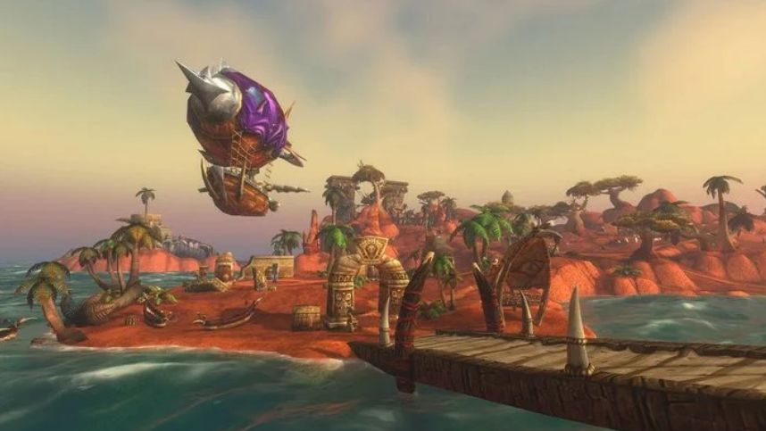

News › Premiers bugs
Premiers bugs : bateaux, zeppelins et villes trop vides
6 novembre 2026
Un lancement sans accroc, ça n'existe pas : deux soucis ont marqué les premiers jours de WoW Forever. Blizzard a réagi rapidement sur ses forums.

Bateaux et zeppelins perdus dans le Maelström
Les bateaux et les zeppelins qui relient les continents se perdent parfois longtemps dans le Maelström : on attend au ponton… et rien n'arrive.
- La solution provisoire : Blizzard a installé des portails près de la plupart des quais et dans les tours des zeppelins. Si ton transport n'arrive pas, cherche le portail tout proche pour changer de continent.
- La vraie correction est annoncée rapidement ; les portails disparaîtront une fois qu'elle aura fait ses preuves.
Des villes qui semblent désertes
Certains joueurs ont eu l'impression de jouer seuls : un joueur racontait ne croiser qu'une huitaine de personnes à Orgrimmar. Ce n'est pas un manque de joueurs, mais un réglage des serveurs qui répartit la population.
- Blizzard est au courant et ajuste ces réglages pour que les zones paraissent plus vivantes.
Tu croises un autre bug gênant ? Signale-le-nous via la page Contact : on partagera les astuces pour le contourner.
Sources : déclarations de Blizzard sur ses forums officiels, relayées par JudgeHype.